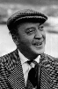

Country:United States, 96 minutes
Spoken languages:Italian, English, German, French
Genres:Mystery, Thriller, Comedy
Director(s):Alfred Hitchcock
Writer(s):Ethel Lina White, Sidney Gilliat, Frank Launder
Video Codec:Unknown
Number: 89


Certification:NR
Storyline:
On a train headed for England a group of travelers is delayed by an avalanche. Holed up in a hotel in a fictional European country, young Iris befriends elderly Miss Froy. When the train resumes, Iris suffers a bout of unconsciousness and wakes to find the old woman has disappeared. The other passengers ominously deny Miss Froy ever existed, so Iris begins to investigate with another traveler and, as the pair sleuth, romantic sparks fly.
Cast: 
Medium: Original DVD,
Comments: Part of: 100 Greatest Horror Classics
Loaned: No
Aspect ratio: Unknown